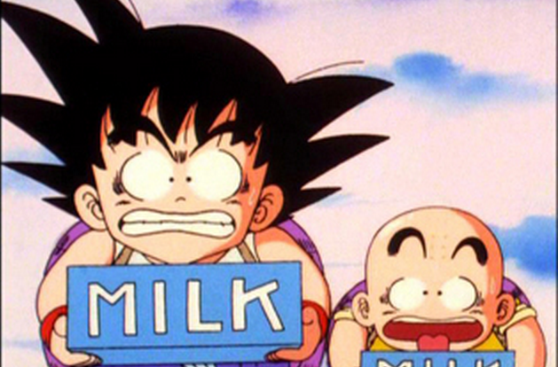
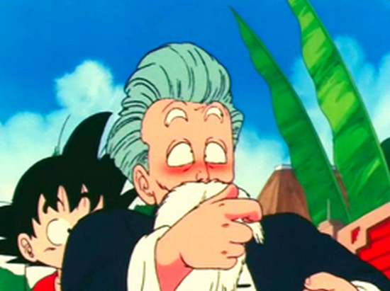

Un cop demanat el desig les boles de drac es dispersen de nou pel món i s'ha d'esperar com a mínim un any abans de poder demanar un altre desig.
Així doncs en Goku acudeix de nou al mestre d'arts marcials Follet tortuga. Allà coincideix amb en Krilin, un nen monjo que també demana al Follet tortuga que l'entreni. Aquest accedeix a entrenar-los a canvi de que li portin una noia maca, encara que les coses no li acaben de sortir bé al Follet tortuga, ja que li porten la Lunch: una noia maca però amb doble personalitat. Al esternudar es transforma i li canvia totalment el caràcter. El cas és que durant una temporada en Follet tortuga els entrena amb els seus mètodes estranys.
|  |  |
I finalment decideix posar a prova l'entrenament dels seus alumnes fent-los participar en el gran torneig mundial d'arts marcials. Allà en Goku, en Krilin i en Yamxa, van guanyar apassionants combats contra rivals estrambòtics fins que finalment en Goku participa a la final contra el misteriós Jackie Chun, que no és altre que el Follet tortuga disfressat amb una perruca. Després d'un llarg i espectacular combat en Goku perd el combat. I parteix decidit en cerca de més aventures i de tornar a reunir les boles de drac per tal de fer-se més fort.